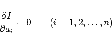

Inhalt Index DeskTop Bronstein

 Numerische Mathematik Integration gewöhnlicher Differentialgleichungen Randwertaufgaben
Numerische Mathematik Integration gewöhnlicher Differentialgleichungen Randwertaufgaben


Als Näherungslösung für die Randwertaufgabe (19.118) wird eine Linearkombination geeignet gewählter Funktionen gi(x) verwendet, die einzeln die Randbedingungen erfüllen und linear unabhängig sind:
Setzt man g(x) in die Differentialgleichung von (19.118) ein, dann wird ein Fehler, der sogenannte Defekt
| (19.122) |
auftreten. Die Bestimmung der Ansatzkoeffizienten ai kann nach folgenden Prinzipien erfolgen:
| (19.123) |
liefern ein lineares Gleichungssystem für die Ansatzkoeffizienten.
| (19.124) |
in Abhängigkeit von den Koeffizienten minimal wird. Die notwendigen Bedingungen
| (19.125) |
ergeben ein lineares Gleichungssystem für die Koeffizienten  .
.
| (19.126) |
gelten, und erhält auch auf diese Weise ein lineares Gleichungssystem zur Bestimmung der Ansatzkoeffizienten.
| (19.127) |
zum Minimum (s. (10.4)). Kennt man die Funktion H(x,y,y'), so ersetzt man y(x) gemäß (19.121) näherungsweise durch g(x) und macht zum Minimum. Die dafür notwendigen Bedingungen
|  | (19.128) |
liefern n Gleichungen für die Koeffizienten ai.
| Beispiel |
|
Unter bestimmten Voraussetzungen an die Funktionen und y sind die Randwertaufgabe |
und die Variationsaufgabe
äquivalent, so daß man für Randwertaufgaben der Form (19.129) die Funktion H(x,y,y') aus (19.130) unmittelbar ablesen kann.
An Stelle des Ansatzes (19.121) wird häufig auch
verwendet, wobei g0(x) die Randbedingungen erfüllt und die Funktionen gi(x) den Bedingungen
 |
(19.132) |
genügen müssen. So kann z.B. im Falle der Randwertaufgabe (19.118)
| (19.133) |
gewählt werden.
Hinweis: Bei linearen Randwertaufgaben führen die Ansätze (19.121) und (19.131) auf lineare Gleichungssysteme zur Bestimmung der Ansatzkoeffizienten. Im Falle nichtlinearer Randwertaufgaben erhält man nichtlineare Gleichungssysteme, die nach den im Abschnitt Nichtlineare Gleichungssysteme angegebenen Verfahren zu lösen sind.